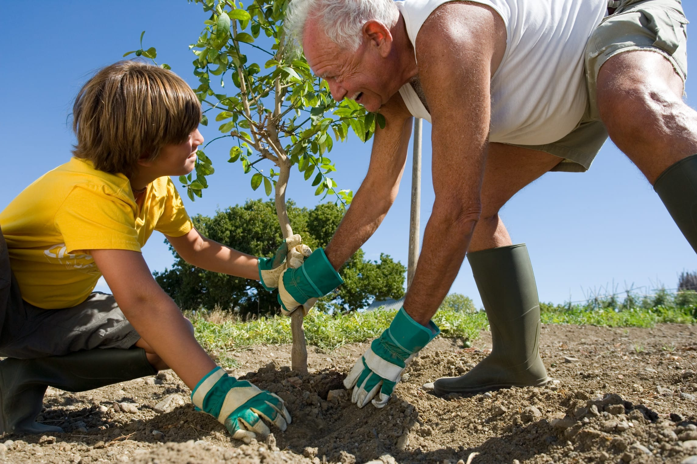

1. Reforestación Consciente
Utilizamos exclusivamente especies nativas (como el Jacarandá, el Ceibo y el Algarrobo) para garantizar la adaptación y el equilibrio del ecosistema local.
Una iniciativa de BioImpact para restaurar nuestros ecosistemas nativos a través de la reforestación colectiva.
La pérdida de bosques nativos en Argentina avanza a un ritmo alarmante, afectando la biodiversidad y acelerando el cambio climático. En BioImpact no solo plantamos árboles: restauramos el pulmón verde de nuestras comunidades.
| Árboles nativos plantados | Hectáreas recuperadas | Voluntarios activos |
|---|---|---|
| 50,000+ | 50+ | 500+ |

Utilizamos exclusivamente especies nativas (como el Jacarandá, el Ceibo y el Algarrobo) para garantizar la adaptación y el equilibrio del ecosistema local.
Involucramos a escuelas y comunidades locales en talleres de concientización y cuidado de la biodiversidad.
Hacemos un seguimiento real del crecimiento y la salud de cada bosque implantado mediante tecnología de geolocalización.
Ya sea donando un árbol, sumándote como voluntario en las jornadas de plantación o aliando a tu empresa, tu impacto cuenta.